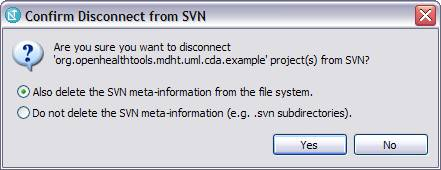
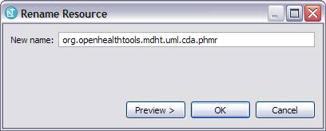
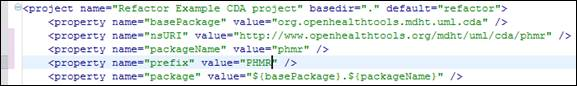

John T.E. Timm, IBM Research
David A. Carlson, Veterans Health Administration
There is an Ant refactor script that can be used to convert the example project into a project for your specific needs. This can be accomplished in three steps:
1. Download and disconnect the example project from the MDHT SVN:
a. Check out cda/example/org.openhealthtools.mdht.uml.cda.example
b. Right-click on Project and select Team > Disconnect from SVN and select Also delete SVN meta-information from file system

NOTE: It is recommended that you check out a clean copy of the example to use in this step.
2. Rename the project:
a. Right-click on Project and select Refactor > Rename (example: org.openhealthtools.mdht.uml.cda.phmr)

3. Edit and run the refactor.xml script:
a. Open the refactor.xml script in the Ant or text editor
b. Change the property values for the following properties:
i. basePackage (e.g. org.openhealthtools.mdht.uml.cda)
ii. packageName (e.g. phmr)
iii. prefix (PHMR)
iv. nsURI (e.g. http://www.openhealthtools.org/mdht/uml/cda/phmr)
c. Run the refactor.xml script as an Ant build using the same instructions found in the previous section. Make sure to run in the same JRE as the workpace.
